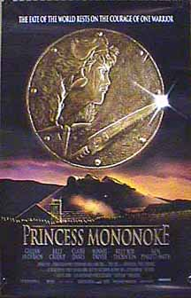

Contents | Features | Reviews | Books | Archives | Store |
 |
|
| Movie Credits | Buy It! |
Princess Mononoke
Review by
Jerry White
Posted 19 November 1999
|  |
Directed by Hayao Miyazaki Starring Yôji Matsuda, Billy Crudup, Yuriko Ishida, Claire Danes, Yûko Tanaka, Minnie Driver, Kaoru Kobayashi, Billy Bob Thornton, Masahiko Nishimura, John DeMita, Tsunehiko Kamijoe, John Di Maggio, Sumi Shimamoto, Jada Pinkett, and Akihiro Miwa Written by Neil Gaiman |
I'm
of two minds about my suitability to review Princess Mononoke. On the one
hand, Nitrate Online should really find someone who's seen more Japanese
animation than I have, who's conversant with the form and its history and who
can place the film in that context. Then again, Miramax is going to be
aggressively pushing this film on a "mainstream" audience, hoping that
it will mark the emergence of Japanese animation into a wider American
visibility. Keeping that in mind, I'm the perfect person to review it; I've seen
just a bit Of Japanese animation (hereafter "anime," just to show you
that I'm slightly initiated into the form's jargon) but I remain unconvinced as
to that form's value in the landscape of world cinema. This is a nice way of
saying that I still mostly associate anime with late-adolescent comic-book
collectors. It's my mind that Miramax wants to change (well, maybe not my mind
specifically, but you get the idea). And I can report, sadly, that my assessment
of anime remains more or less the same as before, except that I have a slightly
diminished respect for Billy Bob Thornton's acting abilities; more on that
later.
The
film is a tale of a young knight who is bitten by a mysterious, shambling
monster, and is then stricken with a curse that threatens to slowly consume him
with evil. He sets out on a quest to rid himself of the curse, and ends up
getting caught in the middle of a conflict between a group of animals with vague
supernatural powers (a fairly obvious metaphor for ancient Japan) and a warrior
queen armed with guns, seeking to tame the forest that threatens to destroy her
community (a fairly obvious metaphor for Japan). I will say that the narrative
is interesting for the way that it avoids simple good & evil oppositions;
both of the parties in this conflict have their share of both, and it's
impressive that we never lose sympathy or entirely identify with either one.
That said, the narrative is still pretty heavy on the fairy-tale tropes, and
even though it invokes these metaphors that I just mentioned, does little to
explore them, focusing instead on fairly literal-minded magical and pastoral
themes.
This
film is the work of Hayao Miyazaki, who is probably the most famous and well
respected Japanese animator ever. This reputation is strongest is Japan, but
it's formidable internationally as well, and I've read a number of times now
about how John Lassiter and the rest of the crew behind Toy Story and
other computer-generated super-productions, whenever they face an especially
tough problem, go and watch a laserdisc of one of Miyazaki's films for a jolt of
inspiration. I will admit that the film has some bits that are visually
impressive; the evil monster, which can only be described as a big ball of black
snakes, is especially weird and memorable. And yet, there's something that feels
a little bit empty about all of this, and at time veers into the cheesy. The
cheesiness is especially visible in a sequence where our hero shoots opposing
warriors with arrows, and their heads fly off, indicating the supreme,
ultimately evil power he is acquiring. It's difficult indeed to separate these
sequences from the kind of silliness that you'd find in any random comic book,
except that they take themselves a whole lot more seriously. I can see why a lot
of people would understand the concluding, mystical sequence to be the film's
supreme visual achievement, and like the opening moments of Princess Mononoke,
it's got some impressive flourishes. And yet, what Miyazaki is evoking here is a
kind of mushy-new-agey linkage of man and nature, which I'm sure has all kinds
of links to Japanese culture and tradition but which is not, in this film,
explored with anything more than a surface, feel-good kind of gloss.
Contents | Features | Reviews
| Books | Archives | Store
Copyright © 1999 by Nitrate Productions, Inc. All
Rights Reserved.